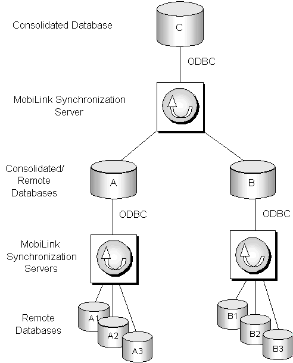

MobiLink is a session-based synchronization system that allows two-way synchronization between a main database, called the consolidated database, and many remote databases.
Detailed information about MobiLink synchronization is provided in the MobiLink Synchronization User's Guide and the Mobilink Synchronization Reference . These books are available in the SQL Anywhere compiled help file, which is installed by default when you install Sybase SQL Anywhere. Information is also available on the PowerBuilder Technical Library CD and from the link to the SQL Anywhere documentation on the Sybase Product Manuals Web site .
If you are already familiar with MobiLink, go to "Working with PowerBuilder synchronization objects" to learn about PowerBuilder integration with MobiLink.
This section introduces some MobiLink terms and concepts.
Data movement occurs when shared data is distributed over multiple databases on multiple nodes and changes to data in one database are applied to the corresponding data in other databases. Data can be moved using replication or synchronization.
Data replication moves all transactions from one database to another, whereas data synchronization moves only the net result of transactions. Both techniques get their information by scanning transaction log files, but synchronization uses only updated log file segments instead of the full log file, making data movement much faster and more efficient.
With synchronization, data is available locally and can be modified without a connection to a server. MobiLink synchronization uses a loose consistency model, which means that all changes are synchronized with each site over time in a consistent manner, but different sites might have different copies of data at any instant. Only successful transactions are synchronized.
The consolidated database, which can be any ODBC-compliant database, such as SQL Anywhere, Sybase Adaptive Server Enterprise, Oracle, IBM DB2 UDB, or Microsoft SQL Server, holds the master copy of all the data.
The remote database contains a subset of the consolidated data. Although MobiLink can synchronize SQL Anywhere and UltraLite databases, for PowerBuilder 10.5 applications, remote databases must be SQL Anywhere databases.
The MobiLink synchronization server, dbmlsrv10, manages the synchronization process and provides the interface between remote databases and the consolidated database server. All communication between the MobiLink synchronization server and the consolidated database occurs through an ODBC connection.The consolidated database and synchronization server often reside on the same machine, but that is not a requirement.
The MobiLink server must be running before a synchronization process is launched.
As you build and test PowerBuilder applications, you can start the server from the Utilities folder in the Objects view in the Database painter. For more information, see the chapter on managing databases in the PowerBuilder User's Guide . For information about starting the server from the command line, see "dbmlsrv10" in the index of the SQL Anywhere online books.
MobiLink typically uses a hierarchical configuration. The nodes in the hierarchy can reside on servers, desktop computers, and handheld or embedded devices. A simple hierarchy might consist of a consolidated database on a server and multiple remote databases on mobile devices. A more complex hierarchy might contain multiple levels in which some sites act as both remote and consolidated databases. For PowerBuilder applications, any consolidated database that also acts as a remote database must be a SQL Anywhere database.
For example, suppose remote sites A1, A2, and A3 synchronize with a consolidated database A on a local server, and remote sites B1, B2, and B3 synchronize with a consolidated database B on another local server. A and B in turn act as remote sites and synchronize with a consolidated database C on a master server. C can be any ODBC-compliant database, but A and B must both be SQL Anywhere databases.

MobiLink synchronization is an event-driven process. When a MobiLink client initiates a synchronization, a number of synchronization events occur inside the MobiLink server. When an event occurs, MobiLink looks for a script to match the synchronization event. If you want the MobiLink server to take an action, you must provide a script for the event.
You can write synchronization scripts for connection-level events and for events for each table in the remote database. You save these scripts in the consolidated database.
You can write scripts using SQL, Java, or .NET. For more information about event scripts and writing them in the MobiLink Synchronization plug-in in Sybase Central, see "Preparing consolidated databases".
SQL Anywhere clients at remote sites initiate synchronization by running a command-line utility called dbmlsync. This utility synchronizes one or more subscriptions in a remote database with the MobiLink synchronization server. Subscriptions are described in "Publications, articles, users, and subscriptions". For more information about the dbmlsync utility and its options, see "dbmlsync utility" in the index of the SQL Anywhere online books.
In PowerBuilder, synchronization objects that you create with the MobiLink Synchronization for ASA wizard manage the dbmlsync process. For more information, see "Working with PowerBuilder synchronization objects".
A publication is a database object on the remote database that identifies tables and columns to be synchronized. Each publication can contain one or more articles. An article is a database object that represents a whole table, or a subset of the columns and rows in a table.
A user is a database object in the remote database describing a unique synchronization client. There is one MobiLink user name for each remote database in the MobiLink system. The ml_user MobiLink system table, located in the consolidated database, holds a list of MobiLink user names. These names are used for authentication.
A subscription associates a user with one or more publications. It specifies the synchronization protocol (such as TCP/IP, HTTP, or HTTPS), address (such as myserver.acmetools.com), and additional optional connection and extended options.
Users, publications, and subscriptions are created in the remote database. You can create them in Sybase Central with the SQL Anywhere plug-in (not the MobiLink Synchronization plug-in). For information about creating users, publications, and subscriptions, see "Creating remote databases".
Dbmlsync connects to the remote database using TCP/IP, HTTP, or HTTPS, and prepares a stream of data (the upload stream) to be uploaded to the consolidated database. Dbmlsync uses information contained in the transaction log of the remote database to build the upload stream. The upload stream contains the MobiLink user name and password, the version of synchronization scripts to use, the last synchronization timestamp, the schema of tables and columns in the publication, and the net result of all inserts, updates, and deletes since the last synchronization.
After building the upload stream, dbmlsync uses information stored in the specified publication and subscription to connect to the MobiLink synchronization server and to exchange data.
When the MobiLink synchronization server receives data, it updates the consolidated database, then builds a download stream that contains all relevant changes and sends it back to the remote site. At the end of each successful synchronization, the consolidated and remote databases are consistent. Either a whole transaction is synchronized, or none of it is synchronized. This ensures transactional integrity at each database.